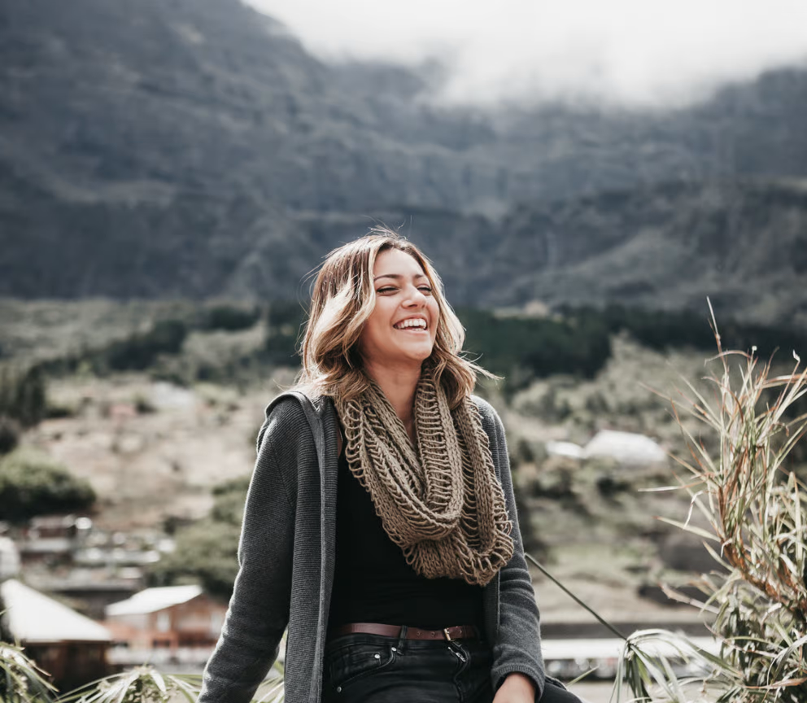

""I just couldn't sit, watch and do nothing" Sheila Andersen Ecologist / Veterinary doctor Sheila has always loved animals, regardless of their size. She was drawn to nature from an early age, and now dedicates her time to fight for those without a voice.
"We have to take responsibility"  Janice Gibson Activist / Veterinary doctor Janice got involved with animal rights and environmental issues after seeing a documentary on factory farming at university. She has been changing the world ever since.